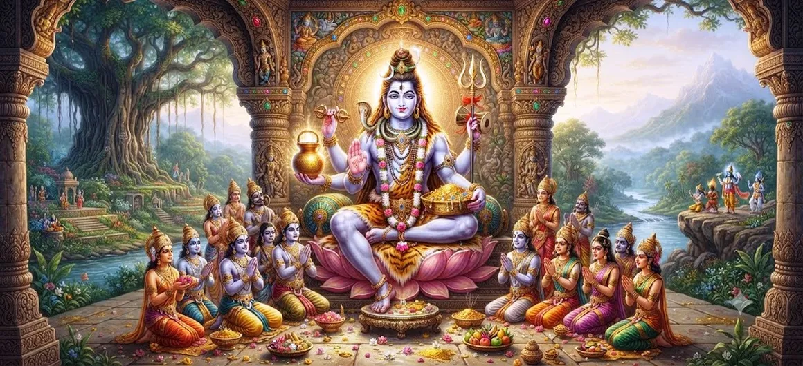

Shiva's Incarnation as Yaksheshvara
Chapter 16 of the Shatarudra Samhita presents the sacred manifestation of Lord Shiva as Yaksheshvara. This chapter continues the sequence of divine manifestations following the account of Grihapati.
The Yaksheshvara manifestation invites reflection on the nature of divine power, the limitations of worldly pride, the recognition of the Supreme, and the importance of humility before the Divine.
Through this sacred narrative, devotees are reminded that the Supreme Reality cannot be measured merely through worldly strength, knowledge, position, or achievement.
Chapter 16 Highlights
Yaksheshvara Manifestation
Focuses on the sacred manifestation of Lord Shiva as Yaksheshvara.
Divine Power
Reflects on the incomparable nature of Supreme divine power.
Humility
Emphasizes humility before the Supreme and the recognition of divine greatness.
Recognition of the Supreme
Encourages recognition of the Supreme Reality beyond limited worldly understanding.
Limits of Worldly Power
Shows why worldly strength and accomplishment cannot define the Supreme.
Spiritual Awakening
Invites devotees to deepen their awareness of Shiva and the Divine.
Core Topics in This Chapter
- 01 The Manifestation of Yaksheshvara →
- 02 Recognizing the Divine Presence →
- 03 The Limits of Worldly Power →
- 04 The Importance of Humility →
- 05 Divine Knowledge and Understanding →
- 06 Devotion to Lord Shiva →
- 07 The Spiritual Message of Yaksheshvara →
- 08 The Supreme Reality Beyond Measure →
- 09 Transition to the Ten Incarnations of Shiva →
- 10 Guidance for Devotees →
The Manifestation of Yaksheshvara
The sixteenth chapter turns toward the manifestation of Lord Shiva as Yaksheshvara. This form is presented within the continuing sequence of Shiva's divine manifestations in the Shatarudra Samhita.
The appearance of Yaksheshvara provides an opportunity to contemplate the mystery of divine presence and the difference between limited worldly understanding and the limitless nature of the Supreme.
Recognizing the Divine Presence
Divine manifestations are not always understood immediately by ordinary perception. The Yaksheshvara narrative encourages deeper discernment and reminds devotees that the Divine may appear in ways that challenge conventional expectations.
Recognizing the Divine therefore requires more than external observation. It requires humility, spiritual awareness, discernment, and openness to higher truth.
The Limits of Worldly Power
Worldly strength, knowledge, status, and achievement may appear extraordinary, yet none of them can independently define or measure the Supreme Reality.
The Yaksheshvara manifestation invites reflection on the limitations of pride based upon temporary accomplishments. True spiritual understanding begins when the individual recognizes the greater Reality beyond personal power.
The Importance of Humility
Humility is essential to spiritual understanding. A person who believes that worldly accomplishments make them completely independent may fail to recognize the Divine source underlying existence.
The Yaksheshvara teaching encourages the devotee to replace pride with reverence and self-importance with awareness of the Supreme.
Divine Knowledge and Understanding
Spiritual knowledge is deeper than the accumulation of information. It involves recognizing the relationship between the individual, the universe, and the Supreme Reality.
The manifestation of Yaksheshvara encourages discernment and reminds seekers that genuine wisdom includes the ability to recognize one's own limitations.
Devotion to Lord Shiva
Devotion provides a way to approach the Divine with love, reverence, surrender, and remembrance. The Yaksheshvara narrative can be contemplated as an invitation to deepen one's relationship with Lord Shiva.
A sincere devotee does not measure the Divine through worldly standards. Instead, devotion opens the heart to the possibility of recognizing a Reality greater than the individual self.
The Spiritual Message of Yaksheshvara
The deeper message of the Yaksheshvara manifestation is the need to recognize the Divine beyond appearances and personal pride. Spiritual life begins to deepen when human beings acknowledge that their abilities and achievements exist within a much greater reality.
Humility therefore becomes not a weakness but a doorway to wisdom. Reverence for the Supreme helps the devotee overcome the illusion that temporary worldly power is ultimate.
The Supreme Reality Beyond Measure
The Supreme cannot be reduced to a worldly measurement. Strength, intellect, authority, wealth, or recognition may have value within ordinary life, but none of these categories can contain the infinite nature of the Divine.
This understanding leads the seeker toward reverence, self-knowledge, and a more profound awareness of Shiva as the Supreme Reality.
Transition to the Ten Incarnations of Shiva
With the account of Yaksheshvara, the narrative prepares to move into the next stage of the Shatarudra Samhita. The following chapter turns toward the Ten Incarnations of Shiva.
This transition allows devotees to continue exploring the diverse ways in which the sacred tradition describes the manifestations and teachings associated with Lord Shiva.
Guidance for Devotees
Devotees can reflect on Yaksheshvara by practicing humility in daily life. Knowledge, ability, success, and position should be received with gratitude rather than allowing them to become sources of pride.
Regular remembrance of Lord Shiva can help cultivate reverence and remind the devotee that every form of personal strength ultimately exists within a greater Divine order.
Key Teachings of Chapter 16
Humility
True spiritual understanding begins with humility before the Supreme.
Divine Power
The Divine transcends all limited measures of worldly power.
Recognition
Seekers should remain open to recognizing the Divine beyond appearances.
Self-Knowledge
Recognizing personal limitations is an important part of spiritual wisdom.
Devotion
Devotion opens the heart toward the Supreme Reality of Shiva.
Spiritual Awareness
Divine remembrance transforms the way devotees understand their own abilities and achievements.
Spiritual Reflection
The manifestation of Yaksheshvara offers a profound opportunity for spiritual reflection. Human beings naturally take pride in their knowledge, strength, achievements, and position, but the sacred tradition repeatedly reminds the seeker that all limited abilities exist within a reality far greater than the individual self. The Yaksheshvara form can therefore be contemplated as a reminder to remain humble before the Supreme. Humility does not mean rejecting one's abilities. Instead, it means recognizing their proper place and receiving them with gratitude. A person may possess knowledge, strength, wealth, influence, or skill, yet none of these makes the individual independent of the greater Divine order. Devotion to Shiva helps transform personal achievement from a source of pride into an opportunity for gratitude and service. The seeker who understands this becomes more receptive to divine knowledge and less attached to the illusion of personal supremacy.
Living the Message of Chapter 16
The teaching of Yaksheshvara can be practiced by remaining humble even when life brings success. Every achievement can be received with gratitude and used for constructive purposes rather than becoming a reason for superiority over others.
Remembering Shiva during moments of achievement can help the devotee remain balanced. Remembering Shiva during moments of limitation can provide humility and patience. In both circumstances, devotion keeps the individual connected with a greater spiritual perspective.
Key Spiritual Concepts
A sacred manifestation of Lord Shiva described in the Shatarudra Samhita.
Recognition that personal abilities and achievements exist within a greater Divine reality.
The limitless power of the Supreme that cannot be confined by worldly measures.
Loving remembrance, reverence, surrender, and devotion toward Lord Shiva.
Awareness of one's own abilities, limitations, and relationship with the Supreme.
The ability to look beyond appearances and seek deeper spiritual truth.
Chapter Summary
Shatarudra Samhita Chapter 16 presents Shiva's Incarnation as Yaksheshvara. The chapter continues the sequence of sacred manifestations following the Grihapati narrative and invites reflection on the nature of divine power and spiritual understanding. Yaksheshvara can be contemplated as a manifestation that challenges limited perceptions of strength, knowledge, achievement, and authority. The central spiritual reflection is the importance of humility before the Supreme Reality. Worldly abilities have their place, but they cannot measure the infinite. Devotion to Lord Shiva helps the seeker recognize personal limitations, cultivate gratitude, overcome pride, and remain receptive to divine knowledge. The chapter concludes this stage of the narrative and prepares the reader for the next chapter, Ten Incarnations of Shiva.
Frequently Asked Questions
① What is the subject of Shatarudra Samhita Chapter 16?
Chapter 16 presents Shiva's Incarnation as Yaksheshvara and reflects on the spiritual significance of this divine manifestation.
② Who is Yaksheshvara?
Yaksheshvara is a divine manifestation of Lord Shiva described within the Shatarudra Samhita.
③ What is the spiritual significance of Yaksheshvara?
The Yaksheshvara manifestation invites reflection on divine power, humility, recognition of the Supreme, spiritual discernment, and the limitations of worldly pride.
④ What is the main lesson of the Yaksheshvara narrative?
A central lesson is to remain humble and recognize that worldly power, knowledge, and achievement cannot measure the Supreme Reality.
⑤ What chapter comes before Shiva's Incarnation as Yaksheshvara?
The previous chapter is The Incarnation of Grihapati — Part 3.
⑥ What chapter comes after Shiva's Incarnation as Yaksheshvara?
The next chapter is Ten Incarnations of Shiva.
“True wisdom begins when pride gives way to reverence before the Supreme.”
Continue Through Shatarudra Samhita
Continue from the sacred account of Grihapati to Shiva's manifestation as Yaksheshvara, then proceed to the Ten Incarnations of Shiva.